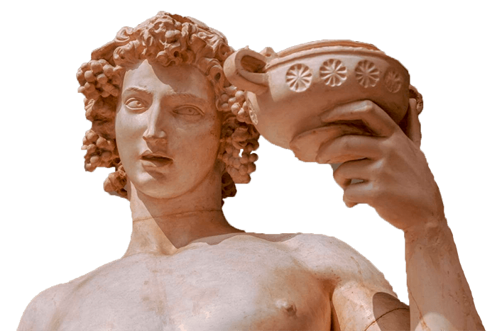

Hola
soy bacchus!
soy bacchus!
En la mitología griega, Dioniso es uno de los considerados dioses
olímpicos, es el dios de la fertilidad y el vino. En tiempos del
Imperio romano pasó a ser llamado Baco. Su imagen es conocida por
todos. Habitualmente lo vemos representado en la pintura y en la
escultura portando un cuerno repleto de vino y con racimos de uvas
en su cabeza, es la imagen del Dios del vino.
El nombre Bacchus proviene del nombre Baco en latín. De ahi viene el
nombre de la bacchus, una uva blanca de vino creada por un
viticultor.